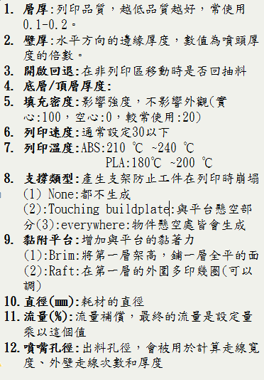
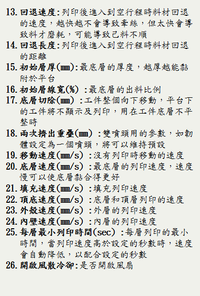
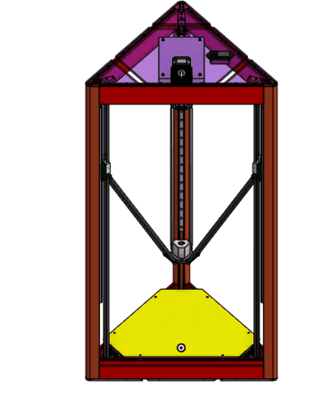
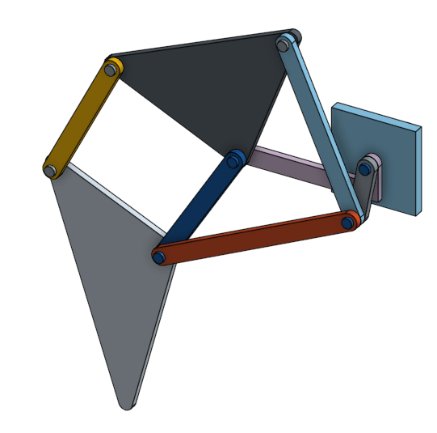
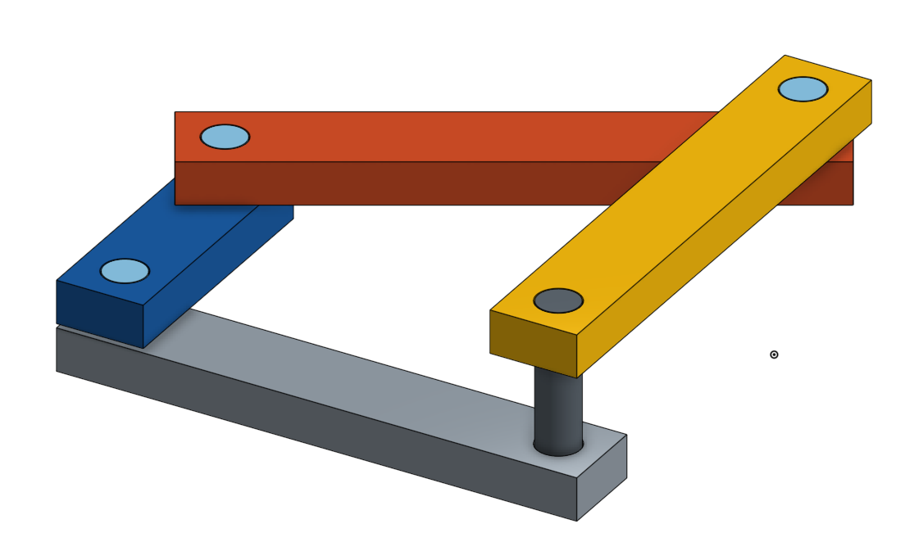
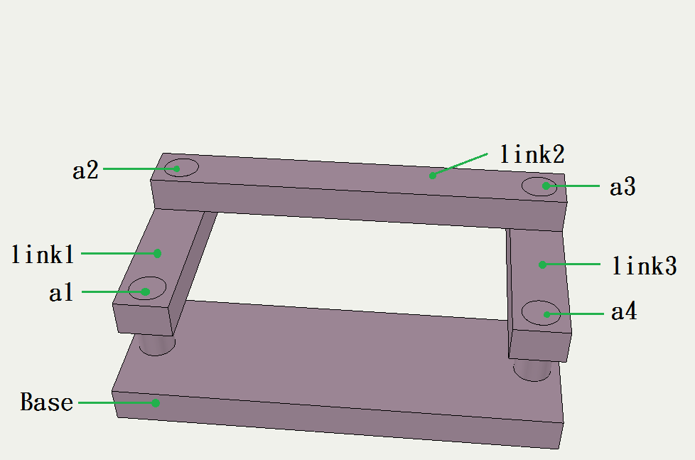

V-rep 在 Delta 3D-Printer虚實整合模擬上的應用
組員
40323218 李冠興
40323230 張 元
40323231 張立昇
40323250 詹偉志
指導老師：嚴家銘 教授
李武鉦 教授
Delta 3D-Printer
3D 列印機硬體設置
- 3D Printer 結構介紹
- 組裝過程
- 程式碼介紹
- Cura
- Pronterface
- 校正機台
- 重點提攜
V-rep
電腦輔助動態模擬
- V-rep 基本介紹
- Onshape 介紹(待改)
- V-rep 細部介紹(待改)
- 四連桿 範例(待改)
- 八連桿 範例(待改)
- 控制模擬(待改)
- 控制範例 1 - 可變電阻控制噴頭位置
- 控制範例 2 - 六軸感測器控制噴頭位置
- V-rep - 模擬列印與控制
- 結論
Pyslvs
平面連桿機構模擬及尺寸合成套件開發
- 使用技術
- 平面模擬
- 數學模型
- 尺寸合成
- 功能
- 開發歷程
摘要
根據國外研究指出 ,3D Printing 是近年來發展最快速的技術之一 ,國內外各家科技大廠紛紛投入。 3D列印技術讓原本只存在腦海中的概念 ,經由 3D Printer 做快速打樣成型 ,節省了過往傳統打樣的繁複過程與費用。 在使用 3D Printer 列印的過程中 ,我們發現有時會有路徑錯誤的問題 ,跟 CNC 比較起來缺少模擬列印的功能 ,使列印前缺少一道檢查錯誤的步驟。
研究動機
一開始我們在研究模擬腳踏車的齒輪與鍊條機構，利用 3D Printer 印製零件組裝，但是在印製的過程時常出現 問題，導致花費許多時間和材料，經過討論想到如果有一 套能夠模擬3D列印的軟體，先經過這套軟體的模擬可以降 低錯誤的發生率，也可以提升印製的品質。
研究目的
內容
Delta 3D-Printer 結構介紹

Delta 3D-Printer 硬體介紹

韌體程式碼介紹
先下載arduino ,之後開啟Repetier中的Configuration.h進行修改裡面的參數 ,修改完後按上傳(向右的箭頭) ,完成韌體的部分。
韌體程式碼介紹
Cura介紹 - 機台設定
進入Cura的主畫面後須先設定機台 ,點選機型設置(圖.1)進入設定頁面(圖.2) ,此機台的平台為圓形所以設定Circular(因此寬、深因此相同)。 擠出機也只有一個所以選擇1。由於機台為三角形機台 ,因此平台中心設為(0,0)。波特率設為115200(需與韌體相同)。設定完之後即可開始使用Cura。


Cura介紹 - 參數設定
Cura介紹 - 參數設定
 
Cura介紹 - 界面說明
Pronterface介紹 - 界面介紹
Pronterface介紹 - 機台校正
步驟一.與Pronterface連接 電腦先與3D列印機連接(USB) ,之後開啟Pronterface ,按下Port(會直接幫你搜尋端口) ,之後按下connect進行連接(圖.3)。
Pronterface介紹 - 機台校正
步驟二.原點復歸 在圖樣控制面板中按下房子符號(原點復歸)，讓Pronterface紀錄原點(沒做此步驟可能會造成撞機的危機)(圖.4)。
Pronterface介紹 - 機台校正
步驟三.量測列印高度 在輸入地方輸入G01 Z10，讓噴頭下降至距離平台10mm處(預留量，避免撞機的可能) ,放置一張紙在平台上(檢測用) ,之後在圖樣控制面板中按Z軸的位移量讓噴頭接近平台(位移量由大到小避免撞機)，噴頭下降的過程中挪動平台上的紙張 ,直到拉動紙張會有一股阻力時 ,即可紀錄顯示中的數值。
Pronterface介紹 - 機台校正
步驟四.修改列印高度 按下disconnect解除連結，之後開啟Cura，點選機型->機器調試，修改列印高度。(圖.5) 如果Ponterface上顯示Z軸 正數，則將列印高度的數值減掉顯示的數值 負數，則將列印高度的數值加上顯示的數值 改完後，按下保存->復位
Pronterface介紹 - 機台校正
步驟五.調整XYZ軸的高度 連接Pronterface重複步驟一.和步驟二.之後下指令量測紅色三點(圖.6) ,並記錄下來。
Pronterface介紹 - 機台校正
之後調整各軸滑塊上的螺絲 ,使螺絲向上或向下移動 ,影響光學極限開關 ,讓各軸的總位移量改變。(圖.7)
Pronterface介紹 - 機台校正
例如:pronterface量出來個點的值為 圖.8 調整螺絲後為量出來的值為 圖.9 螺絲: 逆時針轉一圈 ,值上升0.4mm 順時針轉一圈 ,值下降0.4mm A軸: 由0.9上升到1.6 ,將螺絲逆時針轉1.75圈 B軸: 由1.5上升到1.6 ,將螺絲逆時針轉0.25圈 C軸; 由2.5下降到1.6 ,將螺絲順時針轉2.25圈
Pronterface介紹 - 機台校正
步驟五.四點同高 做完步驟一 ~ 步驟四後 ,四點高度為圖.10。 圖.10這種狀況會讓列印出來的東西變碗狀。 如:圖.11 ,四周較高而中間偏低
Pronterface介紹 - 機台校正
切斷Pronterface ,切換至Cura中的參數設定頁面 ,修改水平半徑的參數。(圖.12) 水平半徑: 數值減少:四周數值增加0.2 數值增加:四周數值減少0.2 本例題為將四周數值降低1.6 ,因此將水平半徑的數值增加8。修改完後按下保存 ,在按復歸後完成。
Pronterface介紹 - 機台校正
步驟六:修改列印成品大小 做完步驟一到步驟五後即可開始列印 ,列印出來的工件用游標卡尺做量測 ,有可能會發現工件不如預期的縮水或變大。 例如 : 工程圖尺寸為40.00mm，量測出來的值為39.40mm，尺寸縮小。 做法:開啟cura的參數設置修改斜桿長度(圖.13)
Pronterface介紹 - 機台校正
斜桿長度: 增加1mm:列印成品尺寸減少0.2mm 減少1mm:列印成品尺寸增加0.2mm 本題須將39.40mm增加到40.00mm ,則減少斜桿長度3mm。改完後 ,按下保存 ,在按復歸後完成。
V-rep 簡介
V-rep為 Virtual robot experimentation platform 的縮寫 ,是一套機器人模擬軟體 ,讓使用者可以模擬整個機械系統 。
程式語言支援 C/C++ , Python , Java , Lua , Matlab , Octave 等等 ,可使用在遠端監控、硬體控制、快速原型驗證、演算法開發與參數調整、安全性檢查、機器人教學與工廠自動化模擬等各種領域。
Onshape 介紹
 Onshape 是一套由前 Solidworks 團隊開發出來的 3D 建模平台 ,它的優點及特色就是可以線上協同設計 ,和同伴能夠分工合作 ,且能達到參數繪圖。
Onshape 是一套由前 Solidworks 團隊開發出來的 3D 建模平台 ,它的優點及特色就是可以線上協同設計 ,和同伴能夠分工合作 ,且能達到參數繪圖。 Onshape的使用者分類 ：
Onshape的使用者分類 ：
教育、商業跟業餘三大類。
Onshape 介紹
 Onshape 是一種 Full Cloud 的網路 CAD 設計平台 ,它的檔案都存在
Onshape 是一種 Full Cloud 的網路 CAD 設計平台 ,它的檔案都存在
"雲端" ,提供協同設計的功能 ,並且可以很容易地從雲上找到其他人公開的模型。
協同設計主要的概念為團隊間的分工合作 ,大家提供自己的想法或專長 ,使概念更完善 ,這部份 Onshape 甚至提供可在平板或手機上使用的功能。
Onshape 圖形
  
V-rep 細部介紹
V-rep 基本操作
 1. 視角移動
V-rep 整體介面
2. 視角旋轉
1. 視角移動
V-rep 整體介面
2. 視角旋轉
 3. 視角縮放
4. 視角移動至物體
5. 物體定位(x,y,z)
6. 物體旋轉(x,y,z)
7. 開始模擬
8. 暫停模擬
9. 結束模擬
10. 慢速
11. 加速
3. 視角縮放
4. 視角移動至物體
5. 物體定位(x,y,z)
6. 物體旋轉(x,y,z)
7. 開始模擬
8. 暫停模擬
9. 結束模擬
10. 慢速
11. 加速
V-rep 細部介紹
組合方式是由上往下所構成
V-rep - 四連桿範例
以此例來說 ,當組合階層變成了一個封閉迴路 ,就會有一個零件會被共用 ,這就稱做 close chain ,這時候就必須使用 dummy 當做連結 ,以保持此機構之約束條件。
V-rep - 四連桿範例
內容
V-rep 八連桿範例
內容
下方為範例 (左為預期 , 右為模擬)

V-rep - Printer設定
當Printer匯入 V-rep 後 ,拆解開來的零件約有一百個 ,組裝時須要特別留意噴頭座的部分為 close chain ,六連桿的關節處須要....。
( 擺放位置 )
V-rep - Arduino控制範例
當V-rep內部設定完成後 ,再來就需要透過外界輸入參數 ,控制內部實體 ,因此選擇了容易上手的Adroid ,
控制範例 1 - 可變電阻控制噴頭位置
若要使用Arduino控制V-rep ,除了Arduino本身的程式碼之外 ,還須設定V-rep的scripts內部程式 ,並透過設定相同的通訊埠和arduino的COM點 ,才能達到內外溝通的功能。

控制範例 1 - Arduino程式
以下程式碼為使用三個可變電阻 ,分別控制V-rep內之Printer噴頭位置 ,可變電阻能轉之角度為360度 ,轉1度之電阻值為 最大電阻值/360 ,經單位換算 ,電阻每轉一度能使噴頭移動固定距離 。 分別將三個可變電阻的值存成固定格式 (x,y,z) ,以便在 V-rep 內部讀取後轉換成噴頭位置 。
控制範例 1 - Lua程式
本程式基本架構由 Eric Rohmer 所提供 ,控制方式為收到Arduino傳來固定格式的數值後 ,經由程式語法將其轉換為點座標 ,使噴頭移動到相對映的位置。
可變電阻控制噴頭位置 範例影片
控制範例 2 - 六軸感測器控制噴頭位置
這個控制採用 MPU6050 六軸加速度感測器 ,經由角度之變化後 ,透過和前範例相同的方式 ,傳送數值到V-rep內部後 ,轉換成噴頭欲移動之座標點。

六軸感測器控制噴頭位置 範例影片
因為手的晃動導致噴頭位置不穩定
V-rep - Printer校正
前兩者為模擬練習 ,只有限制移動範圍但並未經過精準校正 ,但控制器和實體列印時同樣需要校正 ,雖然實體熱床對於 CURA 程式的座標為 (0,0,0) ,但V-rep 之內部座標還要包含熱床本身之高度 ,故要補償一個高度值 (L1+L2) ,如此就能控制出料口之位置。
如圖 ,出料口碰觸熱床之補正後高度為 t ,經單位換算後之高度 t = L1+L2 = 0.1165m ( 116.5 mm )

V-rep - Tkinter控制介面
此控制採用 Python 本身的 Tkinter 模組 ,經由 Vrep.py 將 V-rep 內的函式轉換後 再由 Python 控制,通訊採用類似Arduino之通訊埠 ,達到內外溝通。 以下為Tkinter介面 ,依照輸入的座標位置 ,讓噴頭移動至該位置。
V-rep - Particles
為了能夠達到模擬列印的功能 ,必須讓噴頭的位置產生物件(粒子) ,且這個物件產生的位置會隨著噴頭的位置變化而改變 ,但因為粒子的屬性為 dynamic ,電腦運算的部分會隨粒子的數目變多而變慢 ,故不太能列印大型零件。

V-rep - Printer模擬列印
當控制及列印的粒子完成之後 ,G-Code的部分為CURA產生 ,並採用先前報告小組同學 祐生的程式來解讀 ,並透過先前的方式 ,將值傳回V-rep內部 ,雖然不是專門模擬列印的軟體 ,也是能達到模擬列印的功能。

V-rep - Printer模擬列印
如同先前所說 ,列印的粒子數量不能太龐大 ,如同填充的密度不可太密 ,但模擬的部分稍為將粒子的尺寸調大 ,達到更真實的效果 ,如同填充密度100%。

V-rep 列印成果影片
結論
結論內容
Pyslvs

Planar Linkages Simulation
Dimensional Synthesis
Python 3
- 易於閱讀與整理的程式碼
- 與中低階語言的結合力
- 背景記憶體處理
- Web 框架
- 物件導向、泛型編成
- 豐富、易使用的模組資源
Technologies

SWIG
- 將 C 語言與 C++ 語言轉換給中高階語言使用
- 適合對 C 語言熟悉的使用者製作程式端口
- 能夠在高階語言的程式碼中發揮 C 語言高速運算的能力
- GPL 3.0 授權
Cython
- 以 Python 語法編寫程式
- 使用 C++ 語言函式庫
- 用以大量運算驗證後的數學模型
- 擁有 C++ 語言高速執行的特性
Qt and PyQt


跨平台的 C++ 應用程式開發框架
PyQt 作為 Python API 的形式連接 Qt
- 商業授權
- LGPL 2.1
- GPL 3.0
Tool Kit
編譯方法

Git and Fossil
- 雲端倉儲管理軟體
- 系統性的版本紀錄功能
Planar Linkages Simulation
Solvespace
Open source 2D / 3D CAD Application

CDemo


獨立幾何解題程式庫
Mathematical Model

Dimensional Synthesis
Features
開發歷程
- 編譯 Solvespace 對 Python API 成功，並成功用 matplotlib 繪製第一張四連桿的端點路徑。（2016 年 9 月初）
- PyQt 介面計畫開始。（2016 年 9 月中）
- 第一個 Release 版本 v0.1。（2016 年 9 月 27 日）
- 第四版 v0.4 加入了路徑解題的尺寸合成演算法系統。（2017 年 1 月 31 日）
開發歷程
- 第五版 v0.5 加入了滑塊和參數系統、復原重做功能、DXF 與 slvs 格式的匯出功能。（2017 年 3 月 4 日）
- 第六版 v0.6 進行大量錯誤修正與介面改善，並加入三角求解器。（2017 年 3 月 23 日 ~ 4 月 29 日）
- 第七版 v0.7 解決 Solvespace 技術問題，統一功能管理，大幅優化介面與運算排程。（2017 年 5 月中）